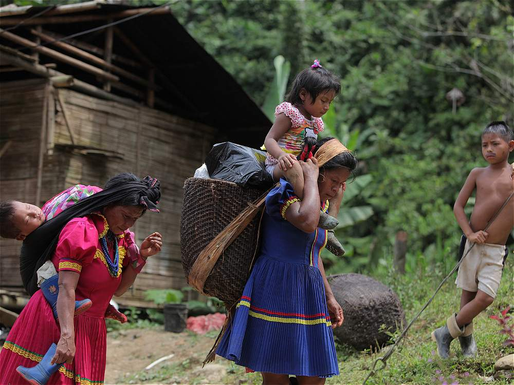

Se basa en la agricultura de selva tropical cultivando café, cacao, chontaduro, maíz, frijol, caña de azúcar. Además practican la caza, la pesca y la recolección y en menor medida, la extracción de madera y oro.
Las mujeres Embera, en especial las ancianas y las niñas salen al pueblo a vender sus artesanías